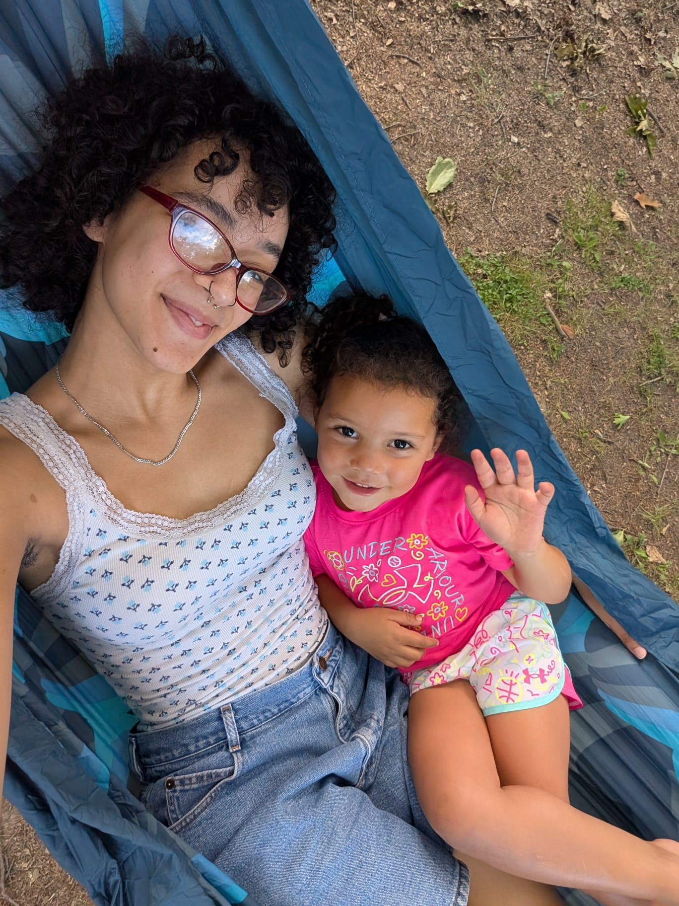

Artist Spotlight

Gabriel Malcolm
Hi, I'm Gabe and this is my littlest sister! I'm the creative mind behind this website and also the sole coder. I've been playing music for much longer than I've been playing with computers, so excuse our simplicity! I'd like to showcase a different artist(s) every week (for a small fee ~$5), so let me know if you'd like to be next. :) p.s. Keeping this website and its email active costs real money, and I don't feel comfortable taking donations. If you'd like to be featured here but can't afford it for one reason or another, we'll wave the fee!
About
Finding local musicians shouldn't be hard, especially in a community so rich in culture and youth. As a budding musician, it seems almost impossible to find venues willing to host, musicians to collaborate with, and ways to promote your music at a local level. We'd like to fix that. With this platform, we aim to connect musicians, venues, and listeners alike. With our directory, you can easily find and contact musicians in your area.
How it works
1. Get listed
Send us your details and we'll add you to the directory.
2. Get found
Venues and other musicians can search by instrument, genre, and town.
3. Connect
Reach out, book a gig, or start a band!
Join the directory
Want to be listed? Want to be featured in our Artist Spotlight? For bands, email us your name, genre, band size, and town. For individual musicians, please provide your name, genre, instruments, and town. Then all we'll need is a way for people to contact you. Don't forget to tell us a little about yourself too!